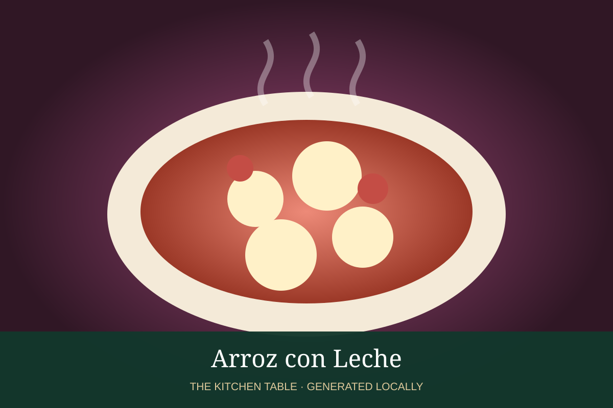

MEXICAN · DESSERTS & DRINKS
Arroz con Leche
Creamy Mexican rice pudding perfumed with cinnamon and vanilla.

Ingredients
- 1 cup long-grain rice
- 2 cups water
- 1 cinnamon stick
- 4 cups whole milk
- 1 can sweetened condensed milk
- 1 tsp vanilla
- Ground cinnamon
Method
- Simmer rice, water, and cinnamon until most water is absorbed.
- Add milk and cook gently, stirring often, until the rice is tender.
- Stir in condensed milk and vanilla; simmer until creamy.
- Serve warm or chilled with cinnamon.